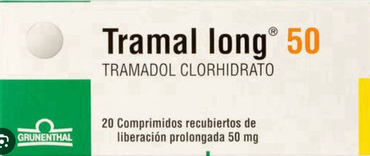
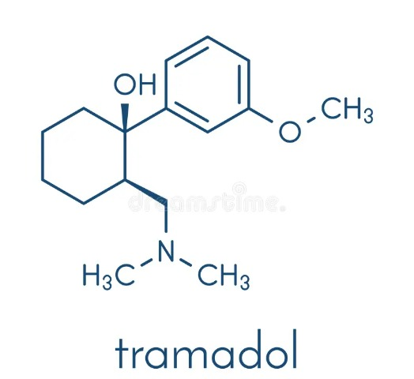
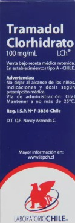

Tramadol
Descripción y uso médico:
El tramadol es un analgésico opioide utilizado para tratar el dolor de moderado a severo. Actúa sobre los receptores opioides del sistema nervioso central y también inhibe la recaptación de serotonina y noradrenalina.
Importancia de la concientización:
La automedicación con tramadol es peligrosa, especialmente entre jóvenes que lo utilizan buscando efectos eufóricos. Es fundamental educar sobre sus riesgos, ya que su percepción como un analgésico "seguro" contribuye a su uso indebido.
Riesgos y consecuencias del mal uso:
Aunque se considera un opioide "más suave", el tramadol tiene un alto potencial de dependencia, especialmente cuando se usa sin supervisión médica. Su abuso puede provocar somnolencia, mareos, convulsiones, depresión respiratoria y síndrome de abstinencia. Además, puede interactuar con otros medicamentos, aumentando el riesgo de síndrome serotoninérgico, una condición potencialmente mortal.
  